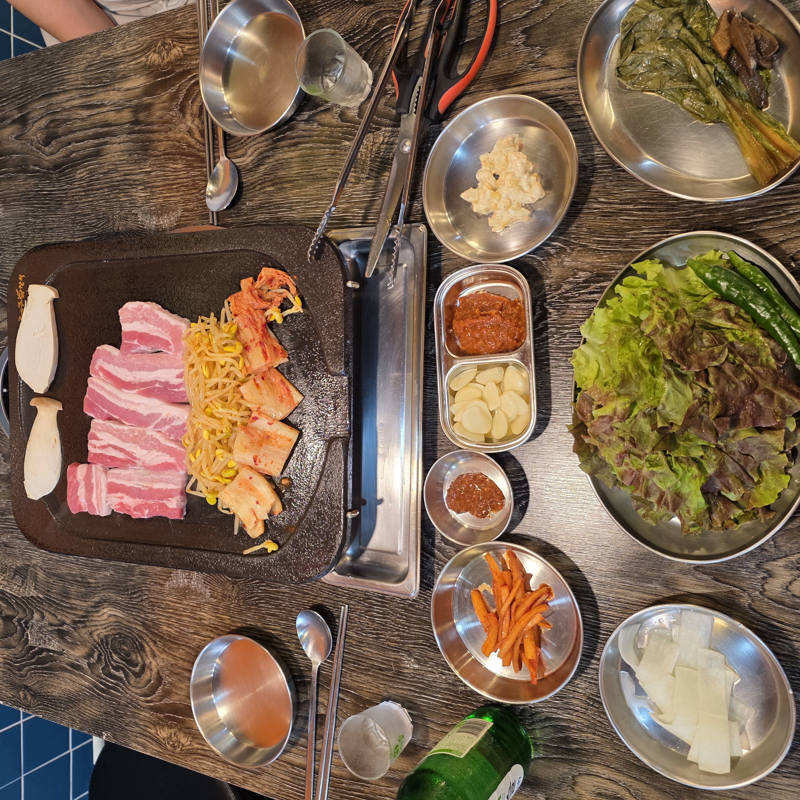
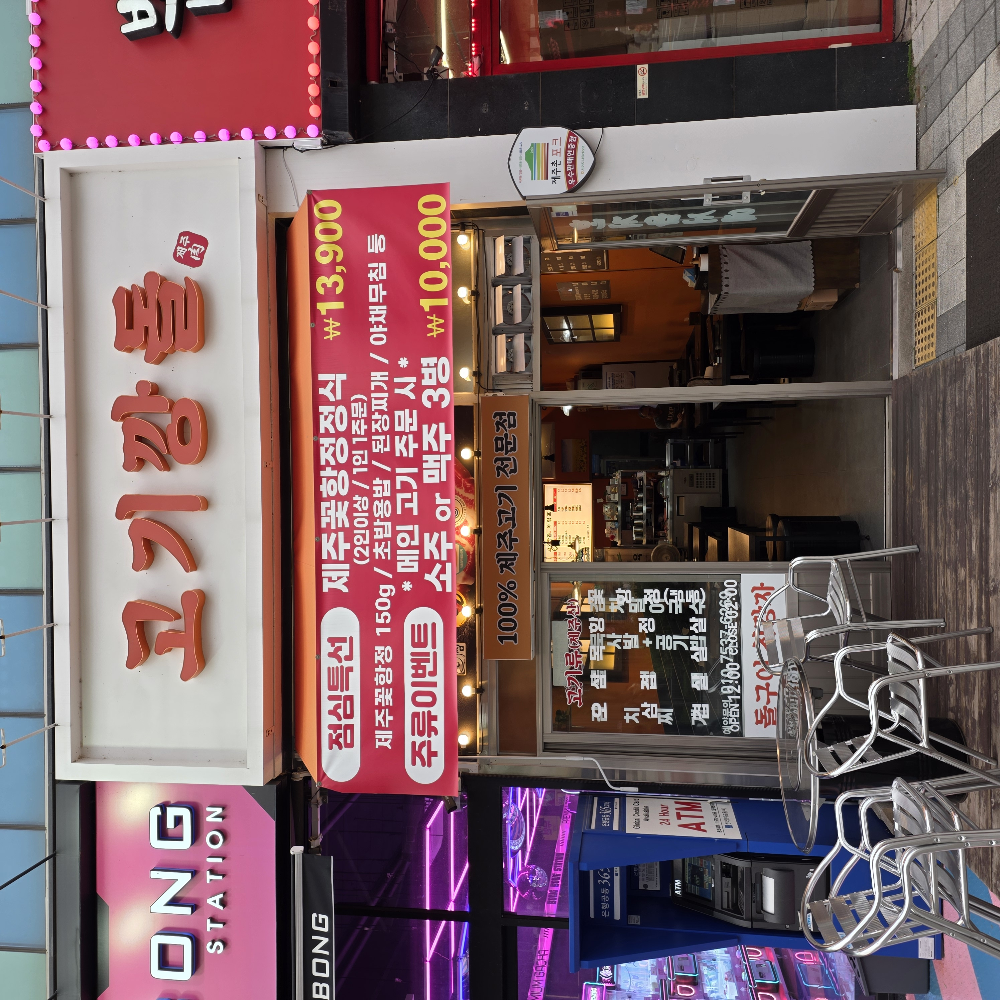
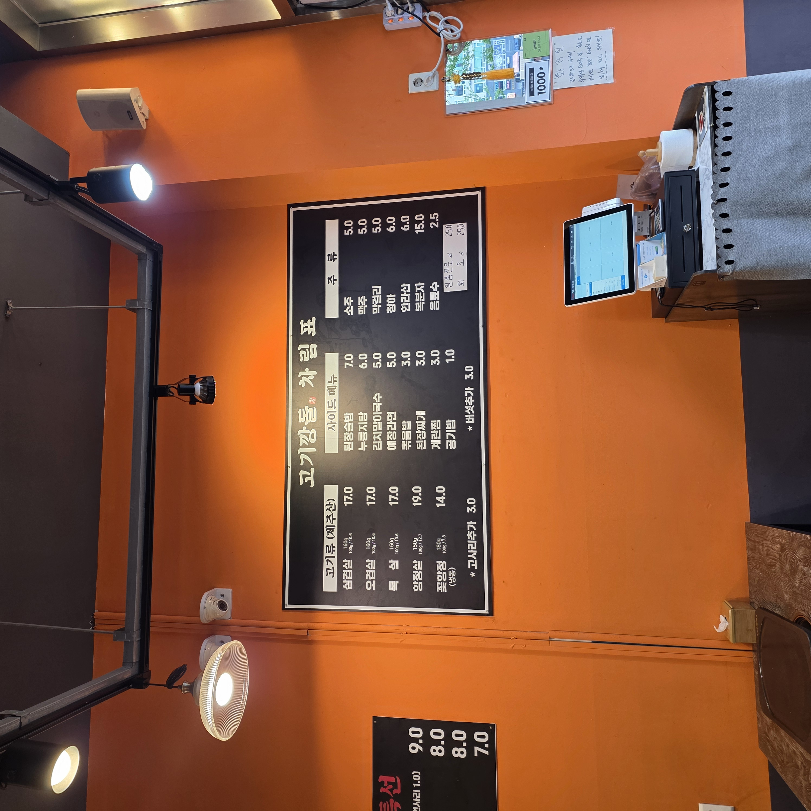
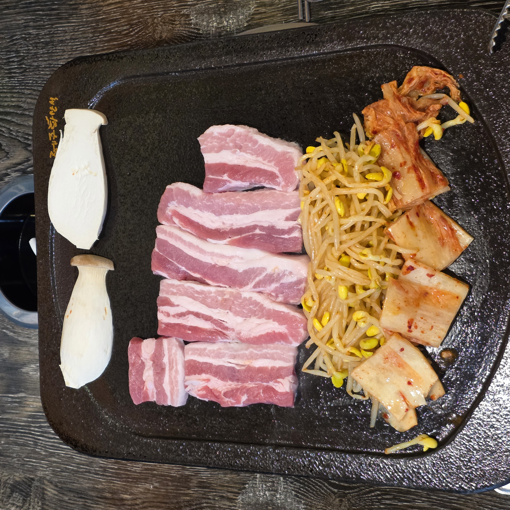
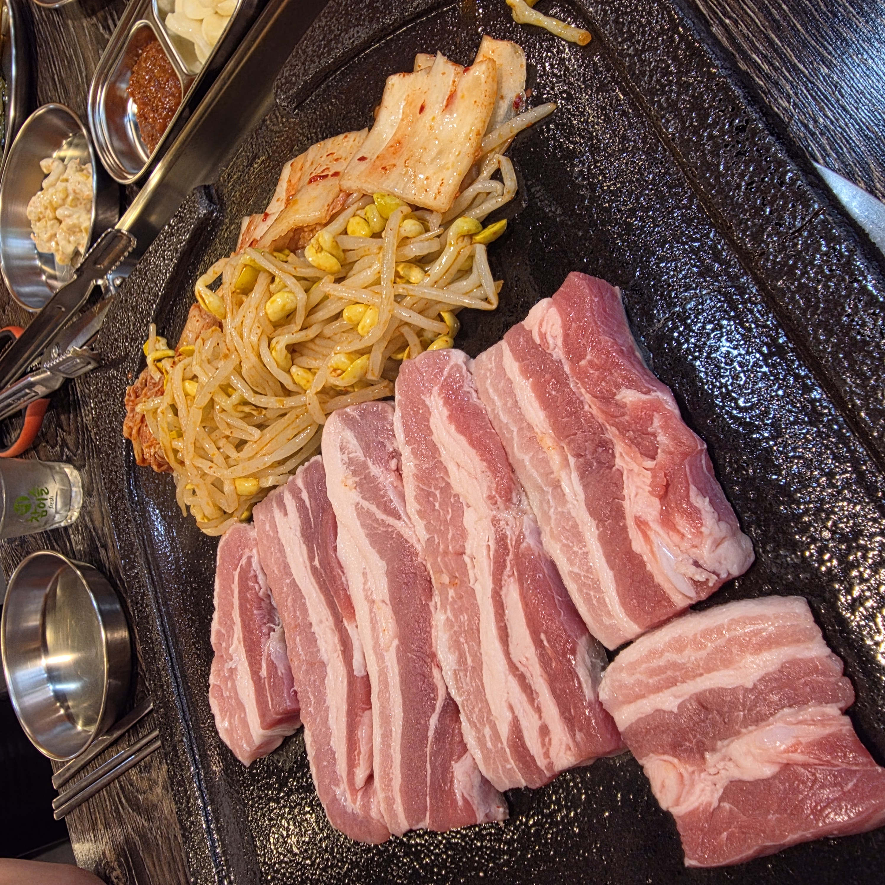
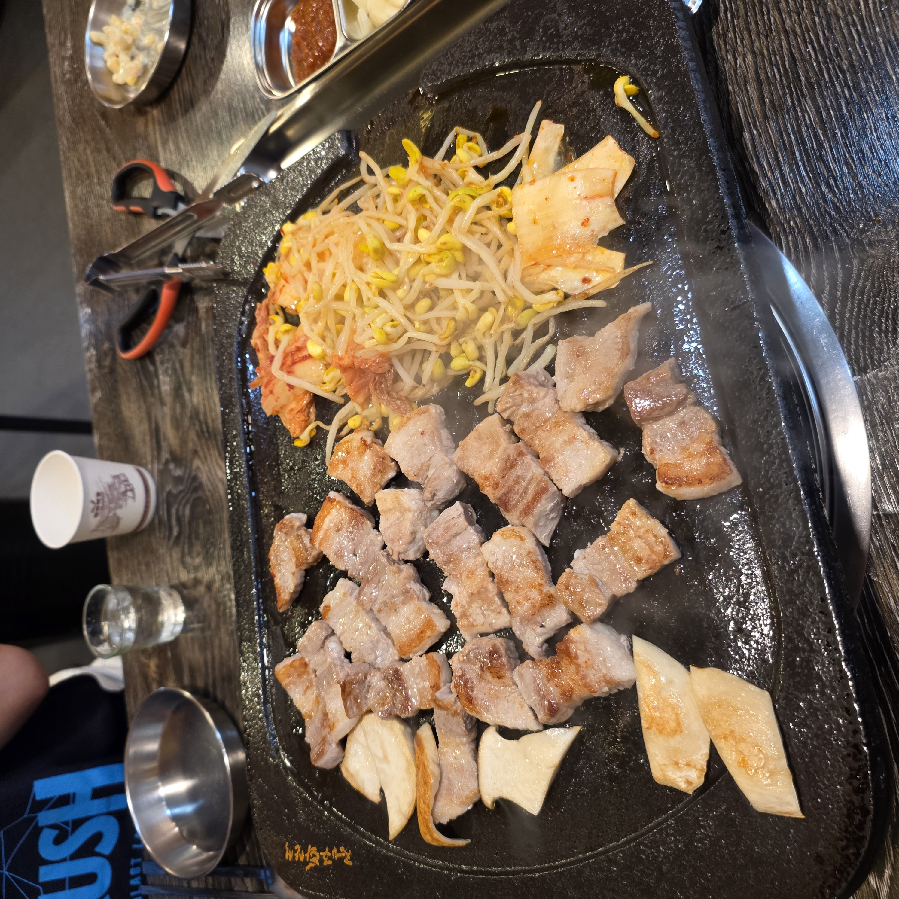
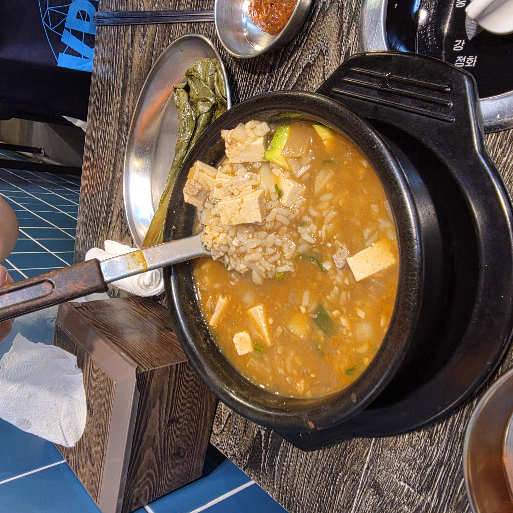
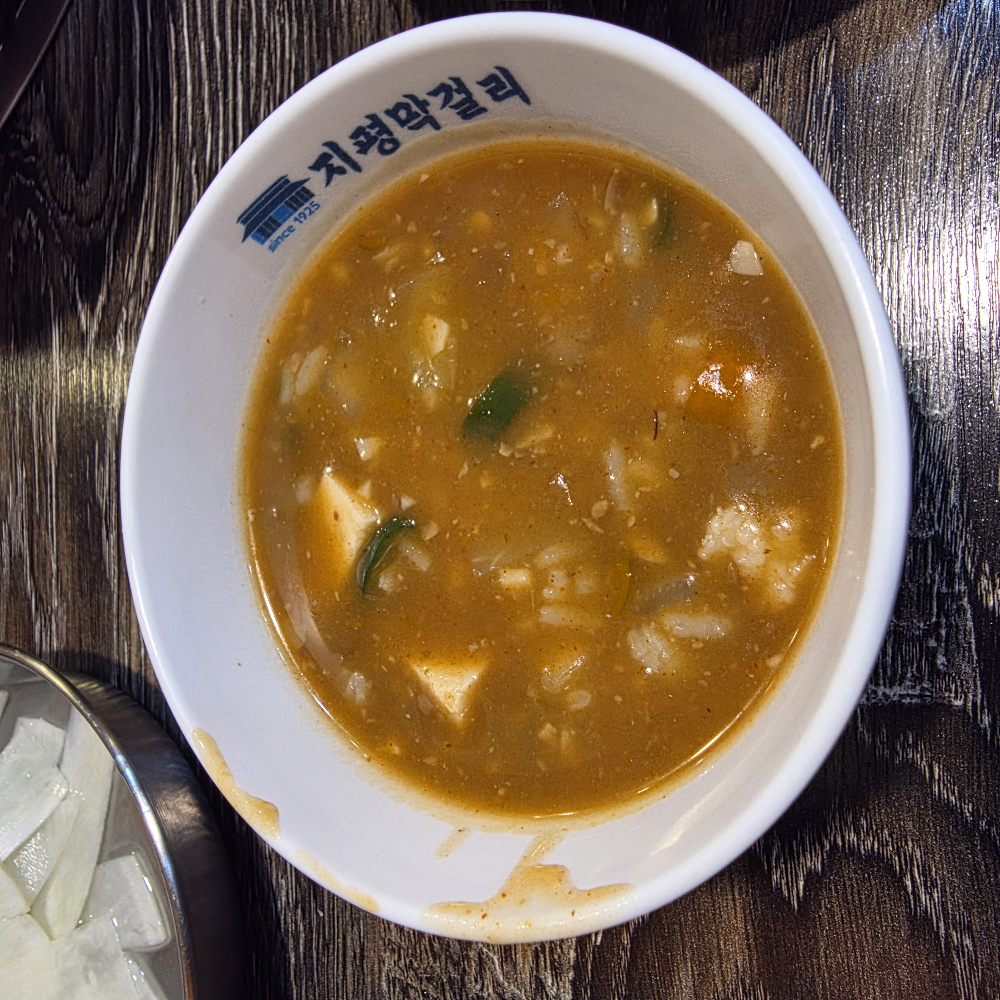
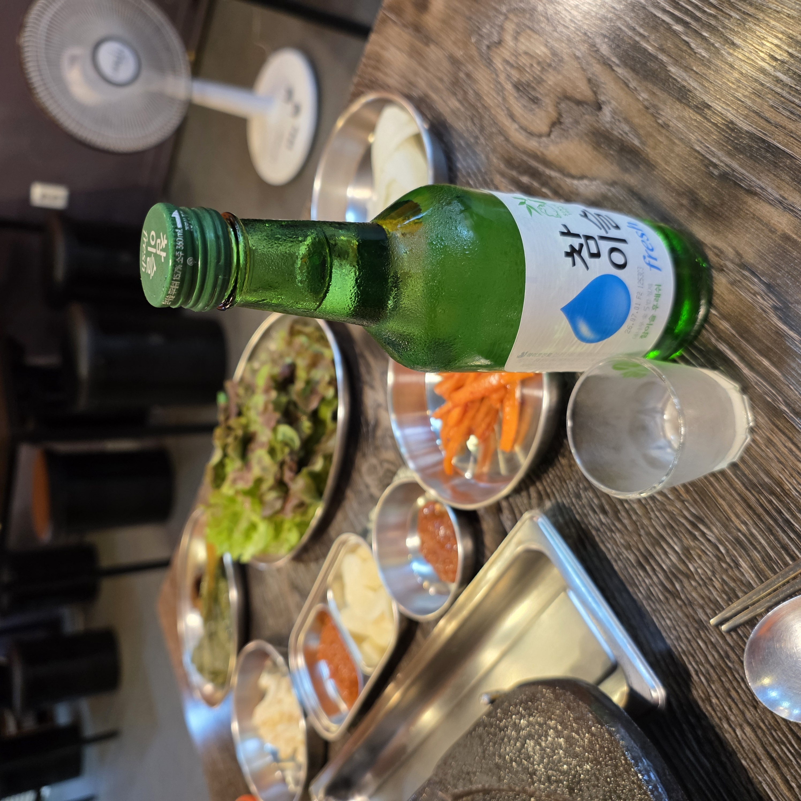

퇴근하고 김포 구래동에서 고기 한 점에 소주 한잔이 당기는 날, 고기깡돌에 다녀왔습니다. 간판에 ‘100% 제주고기 전문점’이라고 큼직하게 붙어 있어서 반신반의하며 들어갔는데, 나올 때는 “여기 또 오겠다” 싶었어요. 저는 이날 제주산 삼겹살에 된장술밥, 참이슬로 저녁을 먹었습니다. 이 글에는 제가 먹어본 그대로의 후기와 함께, 메뉴에서 뭘 시켜야 하는지·부위별 차이·가격·주류 이벤트·어떤 자리에 어울리는지까지 처음 가는 분이 궁금할 만한 걸 최대한 정리해 뒀습니다. 구래동에서 고기집 고민 중이라면 이 글 하나로 판단이 서도록 써 볼게요.

고기깡돌은 경기 김포시 김포한강9로 95, 122호에 있습니다. 상가 건물 호수(122호)에 들어 있어 처음이면 살짝 헷갈릴 수 있는데, ‘시선 이자카야’ 옆, 인형뽑기방 사이라고 기억하고 가면 바로 찾습니다. 저도 이 두 간판을 보고 단번에 입구를 찾았어요. 김포 구래동(한강신도시) 생활권 안이라 근처에 식당·술집이 몰려 있는 골목입니다.
다만 전용 주차장이나 발렛 여부는 제가 확인하지 못했습니다. 상가 밀집 구역이라 갈 때는 인근 공영·상가 주차나 대중교통을 함께 염두에 두시는 걸 권합니다. 정확한 주차 가능 여부는 방문 전 매장에 전화로 확인하는 게 안전해요. (이 글에서 확인 안 된 부분은 지어내지 않고 ‘확인 권장’으로 남겨둡니다.)

가게 앞 유리창과 배너에 ‘100% 제주고기 전문점’이라고 자신 있게 붙어 있습니다. 고기집이 원산지를 이렇게 전면에 내거는 건, 그만큼 고기로 승부를 보겠다는 뜻이라 들어가기 전부터 기대가 됐어요. 안은 오렌지 톤 벽에 메뉴판이 큼직하게 걸려 있고, 테이블마다 불판이 세팅된 직접 구워 먹는 정통 삼겹살집 스타일입니다. 과하게 꾸미지 않고 깔끔한, 동네에서 편하게 오는 고깃집 분위기예요.
개인적으로 큰 장점이라고 느낀 건 영업시간입니다. 매일 낮 12시부터 다음 날 새벽 2시까지 하거든요. 점심 한 끼로도, 늦게 시작하는 2차·야식 술자리로도 부담이 없습니다. 밤늦게 “고기에 소주 한잔” 생각날 때 문 연 집을 찾기가 은근히 어려운데, 여기는 그 시간대를 확실히 커버합니다.
메뉴판을 보면 고기류가 전부 제주산입니다. 눈에 띄는 건 삼겹살·오겹살·목살이 셋 다 같은 값(각 17,000원, 160g)이라는 점이에요. 덕분에 “비싼 게 더 맛있겠지” 고민 없이, 순수하게 취향대로 고르면 됩니다.
| 삼겹살 · 오겹살 · 목살 (제주산, 각 160g) | 각 17,000원 |
| 항정살 (제주산, 150g) | 19,000원 |
| 꽃항정 (냉동, 180g) | 14,000원 |
| 된장술밥 / 누룽지탕 / 김치말이국수 | 7,000 / 6,000 / 5,000원 |
| 소주·맥주·막걸리 / 청하·한라산 | 5,000 / 6,000원 |
부위 선택이 처음이라면 이렇게 잡으면 편합니다.
· 기본은 삼겹살 — 두툼하고 지방 고소함이 확실합니다. 저도 이걸 먹었고, 실패 없는 선택이에요.
· 쫄깃한 식감을 좋아하면 오겹살 — 껍질이 붙어 있어 씹는 맛이 다릅니다.
· 기름이 부담스러우면 목살 — 셋 중 가장 담백합니다.
· 부드러운 특수부위를 원하면 항정살(19,000원), 가성비로는 냉동 꽃항정(14,000원)이 눈에 띕니다.
낮에는 점심특선도 있습니다. 김치말이국수 7,000원 · 묵사발+공기밥 8,000원 · 물냉면 8,000원 · 김치찌개 9,000원 구성이라, 고기 없이 가볍게 한 끼만 해결하고 싶은 날에도 들를 만해요.

이 집에서 술꾼이라면 놓치면 아까운 게 하나 있습니다. 메인 고기를 주문하면 소주 또는 맥주 3병을 10,000원에 주는 이벤트예요. 단품 기준 소주·맥주가 병당 5,000원이니, 3병이면 원래 15,000원인데 10,000원에 주는 셈이라 5,000원이 굳습니다. 둘이 가서 반주로 소주 몇 병 곁들일 생각이라면, 처음부터 이 조건을 활용하는 게 이득이에요. 저도 참이슬을 곁들였는데 술과 고기 페어링을 부담 없이 즐기기 좋았습니다.
이날의 주인공은 제주산 삼겹살입니다. 돌판에 나온 생고기를 보니 도톰하게 썰려 있고 살결이 촉촉했어요. 붉은 살과 지방층이 결대로 잘 살아 있어서, 굽기 전부터 “이건 맛있겠다” 싶었습니다. 고기와 함께 새송이버섯·콩나물·김치가 세팅돼 나와, 불판에 같이 올려 굽기 좋게 준비돼 있었어요. 여기에 쌈채소·마늘·쌈장 같은 밑반찬이 기본으로 깔립니다. 특별히 화려한 상차림은 아니지만, 구워 먹는 데 필요한 건 빠짐없이 나온다는 인상이었어요. 콩나물과 김치를 불판 가장자리에 같이 올려 두면 고기 기름에 지글지글 익어서, 밑반찬이라기보다 또 하나의 안주가 됩니다.


불판에 올리자 기름이 자글자글 끓으며 노릇하게 익어갑니다. 두께가 있어서 겉은 바삭하게, 속은 촉촉하게 구워졌어요. 얇은 대패 삼겹살처럼 금방 바스러지지 않고, 한 점 씹으면 육즙이 도는 그 느낌이 좋았습니다. 한쪽에서 함께 익힌 콩나물과 김치는 삼겹살 기름을 머금어 아삭하고 짭조름하게, 새송이버섯은 쫄깃하게 구워져서 고기와 번갈아 먹는 재미가 있었어요.
잘 구운 삼겹살을 쌈채소에 마늘·쌈장 올려 싸 먹으니 딱 좋았습니다. 확실히 잡내 없이 고소하고, 씹을수록 단맛이 도는 게 “제주고기 내걸 만하다” 싶었어요. 원산지를 앞세운 집답게, 고기 자체의 기본기가 탄탄하다는 인상이었습니다.
두툼한 삼겹살을 맛있게 굽는 제 나름의 순서 팁도 남겨둘게요. 불판이 충분히 달궈지면 기름이 좀 있는 면을 먼저 아래로 놓아 밑기름을 내고, 그 위에서 콩나물·김치·새송이버섯을 같이 익히면 고기 기름을 머금어 훨씬 맛있어집니다. 두께가 있으니 조급하게 뒤집지 말고 한 면을 충분히 익힌 뒤 한 번만 뒤집는 게 겉바속촉으로 굽는 요령이에요. 다 익으면 가위로 한입 크기로 잘라 쌈장 얹은 마늘·쌈채소에 싸 먹으면 됩니다. 저는 삼겹살→구운 김치→소주 순으로 돌아가며 먹었는데, 짭조름한 구운 김치가 기름진 고기 사이 입맛을 계속 살려줬어요.

고기를 실컷 먹고 나면 마무리가 중요하죠. 저는 된장술밥(7,000원)을 시켰는데, 결론부터 말하면 이 집에서 이건 꼭 드셔 보라고 권하고 싶어요. 구수한 된장 국물에 밥과 두부·호박이 어우러져, 고기로 살짝 느끼해진 입을 따끈하고 깔끔하게 정리해 줍니다. 뚝배기 바닥까지 긁어먹게 되는 그런 맛이었어요.
여기에 참이슬 한 잔을 곁들이니 저녁 자리가 제대로 완성됐습니다. 고기·밥·술이 딱 맞아떨어지는, 기분 좋은 한 끼였어요. 마무리 메뉴가 부담스러우면 누룽지탕(6,000원)이나 김치말이국수(5,000원)도 있으니 취향대로 고르면 됩니다.



추천하고 싶은 경우는 이렇습니다. ① 구래동·한강신도시에서 신선한 생삼겹살이 당길 때, ② 늦은 밤 고기에 술 한잔 하고 싶을 때(새벽 2시까지), ③ 둘이서 반주 곁들여 편하게 먹고 싶을 때(3병 10,000원 이벤트). 부위가 같은 값이라 고르기 쉬운 것도 여럿이 취향 갈릴 때 편합니다.
솔직하게 참고할 점도 남겨둘게요. ① 직접 구워 먹는 방식이라 세팅해 주는 집을 원한다면 성향이 갈릴 수 있습니다. ② 낮 12시 오픈이라 이른 아침 식사는 안 됩니다. ③ 삼겹살·오겹살·목살이 전부 같은 값이라 고르긴 쉽지만, 가격 선택지 자체는 단조로운 편이에요. ④ 제가 주차·웨이팅은 확인하지 못했으니, 차를 가져가거나 붐비는 시간대를 피하고 싶다면 방문 전 전화로 체크하시길 권합니다. ⑤ 신생·소규모 매장이라 가격·메뉴·영업정보가 바뀔 수 있으니 방문 전 최신 정보를 확인하세요.
총평하자면, 고기깡돌은 화려한 인테리어나 특별한 이벤트로 승부하는 집이라기보다 고기 자체의 기본기로 만족을 주는 동네 고깃집이었습니다. 제주산 삼겹살의 신선한 상태, 마무리 된장술밥의 완성도, 새벽 2시까지라는 넉넉한 영업시간 — 이 세 가지만으로도 구래동에서 다시 찾을 이유는 충분하다고 느꼈어요. 다음에는 오겹살이나 항정살도 먹어보고, 점심특선으로 김치말이국수도 맛보고 싶습니다. 저처럼 가까운 데서 신선한 고기에 소주 한잔 하고 싶은 분이라면 후회 없는 선택이 될 거예요.
Q. 어떤 부위를 시켜야 맛있나요?
삼겹살·오겹살·목살이 모두 17,000원(160g) 동일가라 취향대로 고르면 됩니다. 무난한 기본은 삼겹살(제가 먹었고 두툼·고소), 쫄깃함은 오겹살, 담백함은 목살, 부드러운 특수부위는 항정살입니다.
Q. 마무리 식사는 뭐가 좋나요?
저는 된장술밥(7,000원)을 강력 추천합니다. 구수하고 든든해서 고기 뒤 입가심으로 딱이에요. 누룽지탕·김치말이국수도 있습니다.
Q. 술을 저렴하게 먹는 방법이 있나요?
네. 메인 고기 주문 시 소주·맥주 3병을 10,000원에 주는 이벤트가 있었습니다(단품 병당 5,000원 → 5,000원 절약). 조건·기간은 방문 시 확인하세요.
Q. 몇 시까지 하나요? 늦은 밤도 되나요?
매일 낮 12시부터 다음 날 새벽 2시까지 영업합니다. 점심부터 심야 술자리까지 폭넓게 이용할 수 있어요.
Q. 주차 되나요?
전용 주차 여부는 제가 확인하지 못했습니다. 상가 밀집 구역이라 방문 전 매장에 문의하거나 대중교통을 함께 고려하시길 권합니다.
Q. 위치가 정확히 어디인가요?
김포 구래동, 김포한강9로 95 (122호)이고, 시선 이자카야 옆·인형뽑기방 사이를 랜드마크로 찾으면 됩니다.
| 상호 | 고기깡돌 (구래동, 100% 제주고기 전문점) |
| 주소 | 경기 김포시 김포한강9로 95 122호 (시선 이자카야 옆, 뽑기방 사이) |
| 영업시간 | 매일 12:00 – 다음 날 02:00 |
| 대표 메뉴 | 제주산 삼겹살·오겹살·목살(160g 각 17,000) · 항정살(19,000) · 된장술밥(7,000) |
| 주류 이벤트 | 메인 고기 주문 시 소주·맥주 3병 10,000원 (방문 시점 기준) |